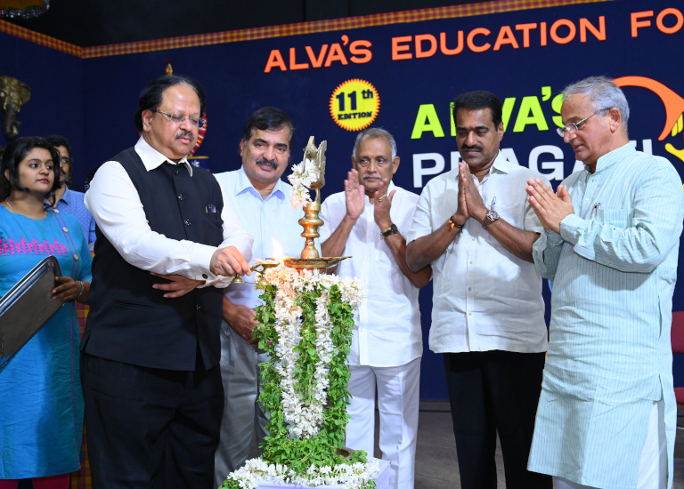

(Affilliated to VTU, Belgaum, Approved by AICTE, New Delhi, Recognized by Govt. of Karnataka)
Alva’s Education Foundation® (AEF) was born out of the entrepreneurial vision of Dr. M Mohan Alva, an ayurvedic doctor, an educationalist and a social reformer in Moodubidri, South India. Alva’s Institute of Engineering and Technology is a premier engineering college situated in Mijar was founded in 2008 by AEF to provide affordable quality professional education to the youth of this underdeveloped region. AIET in its endeavour to excel in teaching, research and service offers Bachelor’s Degree in Mechanical Engineering, Electronics and Communication Engineering, Computer Science Engineering, IT Enabled Services Engineering, and Civil Engineering. AIET also offers a post graduate degree in Business Administration.
The dedicated placement cell of AIET works for the placement and training of students. It holds exclusive camps drives, pool campus drives and mega placement drive Pragati annually. The last year 200 more companies participated and around — numbers of graduates and post graduates of AIET, Alva’s Degree College and other surrounding college students got placed. The placement drive of AIET Moodubidri 2019 witnessed a 100% placement result. All —- students who appeared for placement received job offers and got placed within three days of interviews. The final and lateral placement session for the year 2019 wrapped up with 100% placement record wherein, — students got job offers from several reputed companies. AIET Moodubidri has a distinguished Training & Placement Cell which deals in all kinds of training programmes, boot camps, seminars, and workshops related to the preparation for the placement assistance of the students.
Transformative education by pursuing excellence in Engineering and Management through enhancing skills to meet the evolving needs of the community
1.To bestow quality technical education to imbibe knowledge, creativity and ethos to students community.
2.To inculcate the best engineering practices through transformative education.
3.To develop a knowledgeable individual for a dynamic industrial scenario.
4.To inculcate research, entrepreneurial skills and human values in order to cater the needs of the society.